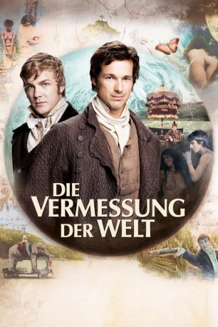

#10692 Die Vermessung der Welt
 
 IMDB-Wertung: 5.8 / 10
IMDB-Wertung: 5.8 / 10  Metascore: 0
Metascore: 0 
Anfang des 19. Jahrhunderts erforscht Offizierssohn Alexander von Humboldt Südamerika. Zur gleichen Zeit erobert Carl Friedrich Gauß, Sohn eines Arbeiters, mit der Welt der Zahlen ganz andere Räume. Beide Männer, der Naturforscher und der Mathematiker, werden zu Berühmtheiten ihrer Zeit. Nur zweimal begegnen sich diese Koryphäen, die trotz unterschiedlicher Naturelle und Biografien in ihrer Entdeckungslust, ihrer Weltfremdheit und Überheblichkeit, aber auch in ihrer erlebten Einsamkeit Gemeinsamkeiten haben.
Jahr: 2012
Dauer: 122 Minuten
FSK: 12
Land: Deutschland Studio: Warner Bros.Tonspuren:
Untertitel:
Auflösung: 720p (1280x688) Größe: 3543 MB
Genre: Drama, Geschichte, Biographie
Regisseur: Detlev Buck
Drehbuch: Daniel Kehlmann, Detlev Buck, Daniel Kehlmann
Soundtrack: Enis Rotthoff
Darsteller:
 Albrecht Schuch als Alexander von Humboldt
Albrecht Schuch als Alexander von Humboldt Karl Markovics als Lehrer Büttner
Karl Markovics als Lehrer Büttner Sunnyi Melles als Mutter Humboldt
Sunnyi Melles als Mutter Humboldt- Paul Lux als Wilhelm von Humboldt (Kind)
 Michael Maertens als Herzog von Braunschweig
Michael Maertens als Herzog von Braunschweig- Max Giermann als Mann vom Militär
 Katharina Thalbach als Mutter Gauß
Katharina Thalbach als Mutter Gauß Guntbert Warns als Vater Gauß
Guntbert Warns als Vater Gauß Florian David Fitz als Carl Friedrich Gauß
Florian David Fitz als Carl Friedrich Gauß- Jérémy Kapone als Aimé Bonpland
 Georg Friedrich als Sklavenhändler
Georg Friedrich als Sklavenhändler Vicky Krieps als Johanna Gauss
Vicky Krieps als Johanna Gauss Alex Brendemühl als Pater Zea
Alex Brendemühl als Pater Zea Thomas Loibl als Barbier
Thomas Loibl als Barbier Anna Unterberger als Minna
Anna Unterberger als Minna- Thomas Oláh als Bote
 David Kross als Eugen Gauß
David Kross als Eugen Gauß Michael Schenk als König von Preußen
Michael Schenk als König von Preußen Leander Haußmann als Naturforscher II
Leander Haußmann als Naturforscher II- Daniel Kehlmann als Der unheimliche Mann / Erzähler
 Johannes Zeiler als Gendarmeriekommandant Vogt
Johannes Zeiler als Gendarmeriekommandant Vogt- Robert Holik als Imprisoned student
- Baldanpurev Sambuu als Lama
- Agi Ariunsaichan Dawaachu als Übersetzer
- Lennart Hänsel als Carl Friedrich Gauß (Kind)
- Mercedes Jadea Diaz als Johanna (Kind)
- Pascal Fiedler als Schuljunge I
- Moritz Adler als Schuljunge II
- Aaron Denkel als Alexander von Humboldt (Kind)
- Nils Dreschke als Hauslehrer Kunth
- Billi Baumgärtner als Lakai Herzog
- Sebastian Brandes als Wilhelm von Humboldt
- Antonio Ordoñez als Matrose I
- Noberto Novik als Matrose II
- Anastasiia Kirilik als Nina
- Davo Enomenga als Indio mit Blasrohr
- Vanessa Rodas als Indianerin mit Läusen
- José Alvear als Eseltreiber
- Juana Guarderas als Spanische Dame Sklavenmarkt I
- Cristina Coral als Spanische Dame Sklavenmarkt II
- Marco de la Torre als Spanischer Edelmann Sklavenmarkt I
- Victor Pape-Thies als Spanischer Edelmann Sklavenmarkt II
- Christian Cobo als Gefährlicher Mestize
- Jose Levith als Gefährlicher schwarzer Mann
- Tatiana Merizalde Dobles als Indianerin Bonpland
- Ronald Kukulies als Fleischer
- Guido Navarro als Großer Indianer
- Heiko Klimenko-hamann als Der bedrohliche Mann
- Eric Minsk als Diener Kant
- Peter Matic als Immanuel Kant
Datei: X:\2012(N-Z)\Vermessung der Welt, Die (2012, FSK12, 1280x688).mkv seit 22.02.2019
Festplatte: HD 2012(N-Z)-2013(A-H)
 Es gibt insgesamt 138 Filme in der Gruppe '2012(N-Z)'
Es gibt insgesamt 138 Filme in der Gruppe '2012(N-Z)'